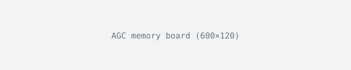

阿波罗制导计算机的核心存储器是 2048 个 36 位字，总容量 73,728 位，大约 9 KB。 指令与数据混在一起，地址按字计。
不同 Block II 的分段数有差异，引用时应以具体的手册为准。
| 区域 | 容量 | 用途 |
|---|---|---|
| Rope / Fixed | 33,892 字 | 常驻代码 |
| Superrope | 845 字 | 磁鼓载入，擦除 ROP |
| ROP（每人） | 2,048 字 × 3 | 可擦写用户区 |
| Core rope / erasable | 2,048 字 | 主工作区 |
上表数字汇总自各手册，不是单一来源的权威值。
AGC 的调度靠优先级抢占。更高优先级的任务可以打断低优先级任务， 这让关键任务（姿态、点火）不会被普通计算饿死。
1202我们没有去修它。我们让它继续报错，然后把能省的电都省下来。
工具链的成熟度足以支撑一次完整考古：
# 不是原文，是按手册重述的伪代码
if computer_overload():
issue(1202) # 告警编号写入 AGC 计数区
# 不停机：停机会丢掉姿态信息，地面将失去唯一的实时数据源
yield_to_next_task()
命令行的用法见 CommonMark 规范（新窗口打开）。
早期的 agc-emulator 写法已经 废弃，改用 yaAGC。
